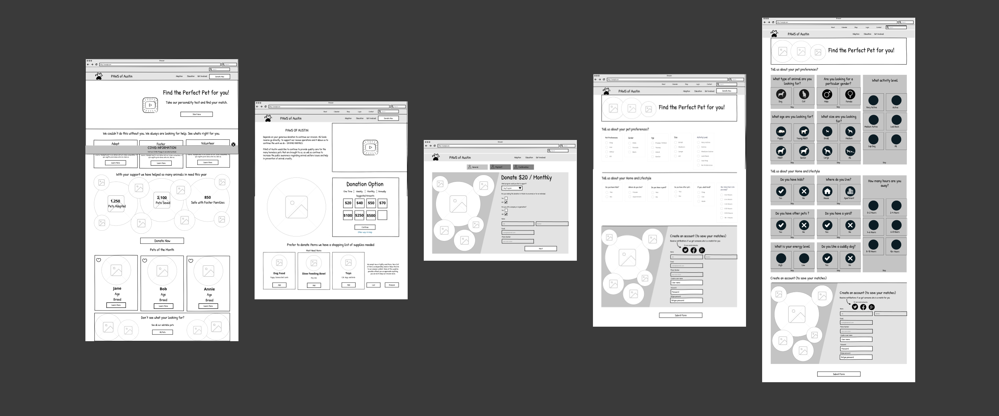
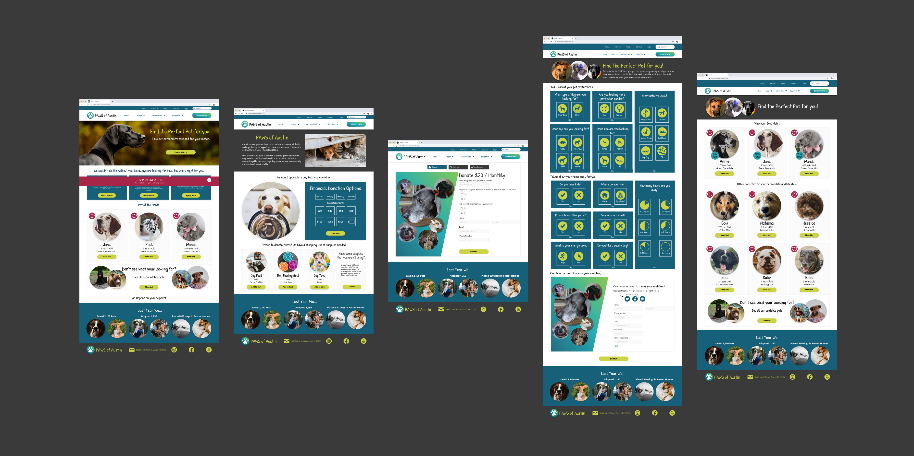

Case Study
PAWS of Austin
Connecting animals with their furever homes

About this Project
Overview
Our class assignment was to redesign a non-profit website, we choose PAWS based on its mission statement and our dedication to helping animals in need. We were given a very short timeline with research - Hifi redesign needed to be completed in 3 weeks. With that in mind we focused on the most important aspects of the site and made it responsive to meet users where they are.
Problem
We observed a disconnect in communication from the shelter to the people who want to help, causing a lack of interest in adoptions, and donations.
Solution
Redesign the web experience by making it more responsive. This will bridge the gap between users who want to get involved and the organization, thus streamlining the process.
My Role
Our team consisted of 3 individuals. We had shared responsibilities of the research and testing phases. My role was to create the overall design as it pertains to colors, wireframes, and rebranding of the existing site.
Tools:
- Miro
- Google Survey
- Trello
- Figma
- Illustrator
- Photoshop
- InVision
Design Process
Design Steps
The process for PAWS UI redesign was shaped by principles of design thinking methodology. I helped keep us on task as we moved through the following steps.
User Research
User Research Goals
We wanted to understand our users' pain points and motivations as it pertains to pets, adoption decisions, and how they connect with rescue organizations.
User Interviews
We conducted 1 on 1 remote interviews with 6 users to collect qualitative data.
Findings
- We discovered most users have a strong relationship with their animals and depend on them for emotional support.
- They are frustrated by the lack of communication from rescue organizations
- Users also find the adoption process tedious and daunting.
Online Survey
We conducted an online survey to collect quantitative data to assess some basic information about our users habits. We had a total of 53 respondance.
Findings
- 70% of our respondents are dog owners
- 64% would prefer to donate money over time
- We found that 80% of our users have donated in some way to a pet rescue in the past.
- 72% prefer to get their pets from rescue organizations.
"I applied to two different shelters and I didn't hear back and it was actually kind of hard because a lot of the decisions on accepting an adoption is opinion based. So it's not always easy."
Competitor Analysis
Since most of our respondents mentioned Austin Pets Alive we realized they were our main local competitor and we felt compelled to conduct a competitor analysis. We also ran a direct competitor analysis on the Austin Humane Society as well as some indirect competitors such as Lara's Canine Solutions, and pet finder. We called out strength, weakness, customer reviews, and personal notes to get a sense of what we needed to create a successful redesign.
Heuristic and Usability Evaluation
Next we ran a usability and heuristic evaluation on the existing site. To establish the major pain points and visualize what changes needed to be made so we could prioritize most needed elements to better the users overall experience.
Definition
User Empathy
- We gathered our notes from the user research and created an affinity diagram to organize our findings.
- Next we moved our notes into an empathy map to visualize our users pain points.
- Then we formulated our user persona Jill Barker.
- To investigate further Jill’s motivations we created a journey map to visualize how Jill would interact with our site as she transitions into this new phase
Meet Jill a divorced mother of 2 daughters, who are heading off to college, as she becomes an empty nester she is feeling lonely and searching for her perfect pet.
Our journey map to visualize how Jill would move through this new journey in her life.
Ideation
Brainstorming
- To ideate creative solutions to Jill’s problems we conducted the I like, I wish, and what if exercise.
- Next we moved some of our ideas into a feature potitization matrix.
- Then we voted on the features we felt would solve Jill’s problems.
User Flow
Starting with a user flow, we visualize how Jill would move through the site. We kept in mind our project scope to keep us on track. Focused predominantly on the donation and adoption process since those were Jill’s major pain points.
Jill's User Flow
Visual Design
Logo Redesign
As we began the redesign effort we started with rebranding. Our first step was to redesign the logo to create a more cohesive and identifiable brand.
Before
After
Colors
We wanted our site to feel whimsical, cute, and fun. We choose colors we felt would convey these emotions and created a pleasing and accessible design.
Typography
The display type is Patrick Hand to give the text a handwritten and whimsical feel. Smaller headings and body copy is Open Sans for clarity and accessibility.
Icons
Icons are displayed on a circle background usually appearing in Charming Chartreuse on the Great Grey or Besty Turquoise backgrounds.
Prototype
Low Fidelity Wireframes
We started with low fidelity wireframes to begin visualizing how we wanted the website to look and function. We couldn’t decided which pet compatibility form we preferred so we decided to create both and let our users decide.
High Fidelity Wireframes
After conducting comparative testing on the low fidelity wireframes we moved onto the high fidelity due to the short project turn around time.
Testing
Low Fidelity Testing
We conducted testing with 6 users and ran a comparative test regarding the preferred pet compatibility form.
Results
- User preferred the form that used icons. They felt it was “easy and more visually appealing”.
- We had users walk through the donation process.
- They liked the different donation options we provided.
High Fidelity Testing #1
We conducted remote testing with 6 users we asked them to move through our donation, compatibility test, and adoption process.
Results
- Users felt the donation process was easy.
- We ran into issues with our compatibility test, users felt it was overwhelming and were unsure which sections to answer first.
Iterations Made
- We divided the form into sections and added a clear progress bar so users could visualize where they were in the process.
- We added skip buttons to create an account, and changed the language on several buttons to clarify our meaning.
High Fidelity Testing #2
We ran one last test of our high fidelity prototype with 6 users.
- Users found the new pet compatibility test easy to navigate and “very cute”.
- They loved the skip buttons and the new progress bars.
Conclusion
Conclusion
I feel we solved many of Jill’s problems by creating a test to match her with the perfect pet for her lifestyle while making the adoption and donation process easier to navigate. We provided clear communication of what to expect during the adoption process. The compatibility test was critical to the adoption process since it provided necessary information for the adoption application in a fun and engaging way thereby speeding up the adoption process.

Key Learnings
I learned a great deal about components and the importance of creating them up front to make the design process move forward at a quick pace. I feel as a team we worked quickly and successfully through this project by dividing up the tasks. We created some great solutions to help PAWS of Austin increase their donations, and streamlined the adoption process. We help Jill meet her goal of finding her perfect match as well.
What's Next
In hindsight I wish I would have run user testing on the existing webpage. At the time I felt it was unimportant due to time constraints. The page was hard to navigate and the overall look needed a major restructuring. I wanted to understand users' motivation over their understanding of the existing site. With more time I would like to build out the fostering program, create an education section that would delve into community involvement and education. I also would like to revisit the mobile design and make it more user friendly.